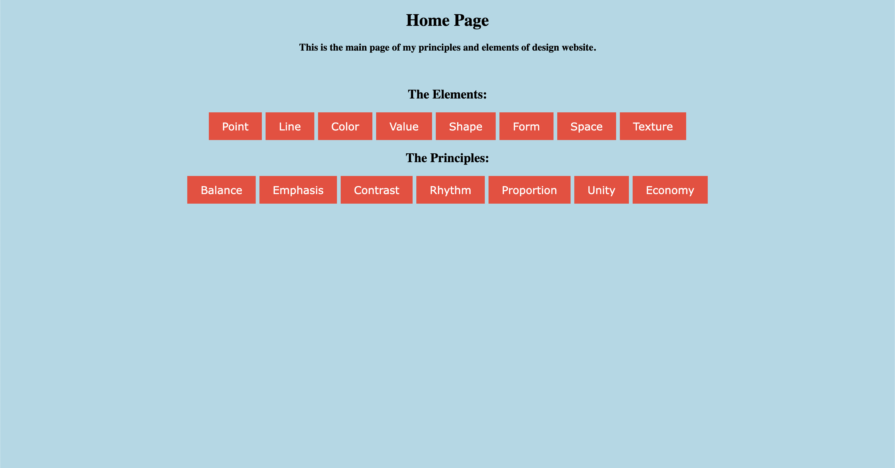

Previous website I made for a project. This one was the Principle and Elements of Design Website. Not too exciting, but it works pretty well. It was my first website I've created using HTML. You can view this site by clicking the link below.